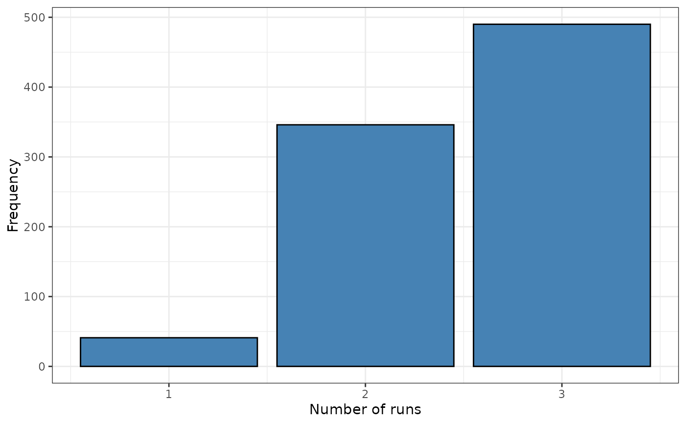
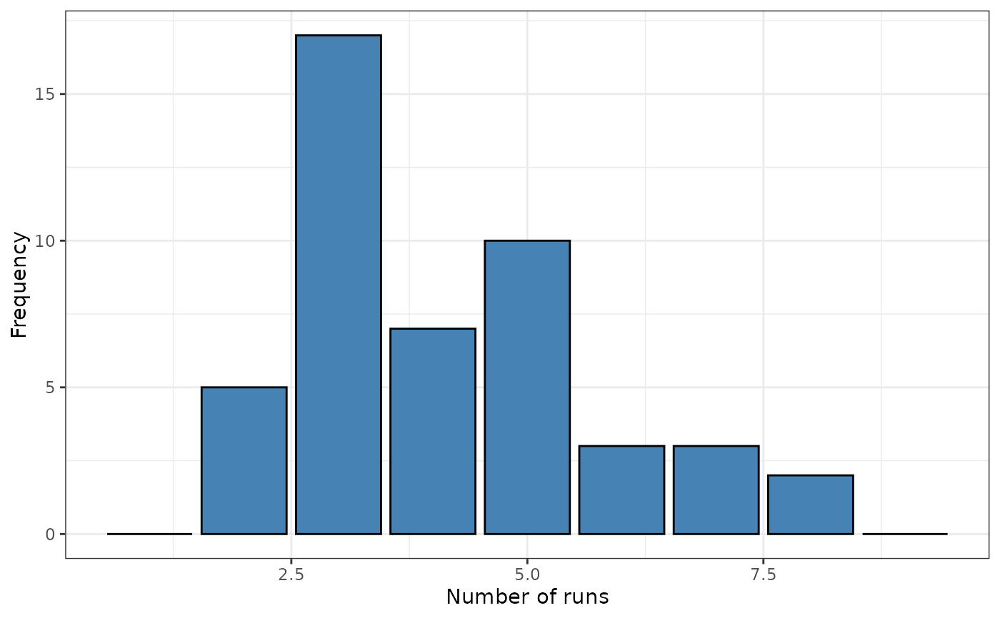
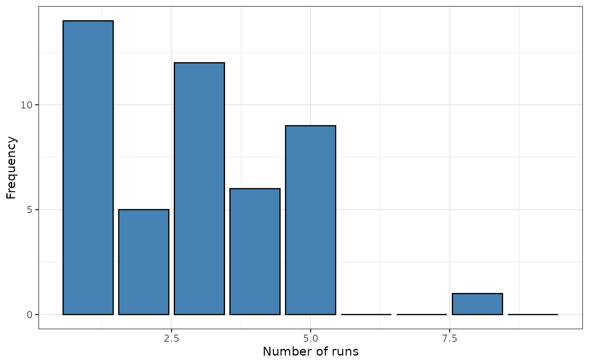

Plot the empirical distribution of runs
Usage
# S3 method for class 'sprunstest'
plot(x, ...)Author
| Fernando López | fernando.lopez@upct.es |
| Román Mínguez | roman.minguez@uclm.es |
| Antonio Páez | paez@gmail.com |
| Manuel Ruiz | manuel.ruiz@upct.es |
Examples
# Example 1: Fastfood example. sf (points)
data("FastFood.sf")
x <- sf::st_coordinates(sf::st_centroid(FastFood.sf))
listw <- spdep::knearneigh(x, k = 2)
formula <- ~ Type
srq <- sp.runs.test(formula = formula, data = FastFood.sf, listw = listw, nsim = 299)
plot(srq)

# Example 2: Spain example (poligons with 0 neinghbourhood)
data("provinces_spain")
sf::sf_use_s2(FALSE)
listw <- spdep::poly2nb(as(provinces_spain,"Spatial"), queen = FALSE)
#> although coordinates are longitude/latitude, st_intersects assumes that they
#> are planar
#> Warning: some observations have no neighbours;
#> if this seems unexpected, try increasing the snap argument.
#> Warning: neighbour object has 4 sub-graphs;
#> if this sub-graph count seems unexpected, try increasing the snap argument.
provinces_spain$Older <- cut(provinces_spain$Older, breaks = c(-Inf,19,22.5,Inf))
levels(provinces_spain$Older) = c("low","middle","high")
formula <- ~ Older
srq <- sp.runs.test(formula = formula, data = provinces_spain, listw = listw, nsim = 299)
#> Warning: st_centroid assumes attributes are constant over geometries
#> Warning: st_centroid does not give correct centroids for longitude/latitude data
plot(srq)

provinces_spain$Mal2Fml <- factor(provinces_spain$Mal2Fml > 100)
levels(provinces_spain$Mal2Fml) = c("men","woman")
formula <- ~ Mal2Fml
srq <- sp.runs.test(formula = formula, data = provinces_spain, listw = listw, nsim = 299)
#> Warning: st_centroid assumes attributes are constant over geometries
#> Warning: st_centroid does not give correct centroids for longitude/latitude data
plot(srq)
